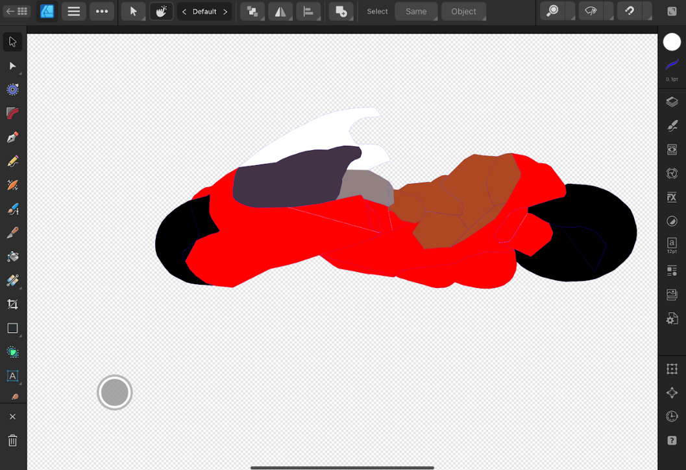
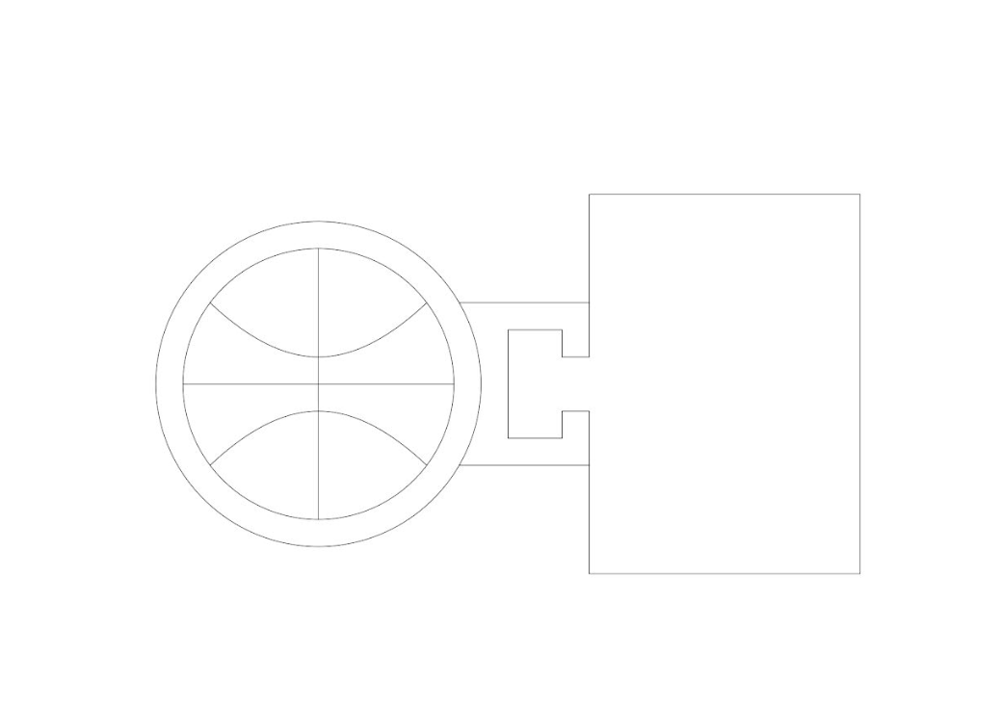

Computer Controlled Cutting
In this section I used Fusion360 and Affinity Designer to create a 2d sticker to be cut and a wooden puzzle piece that will be laser cut.
Akira Bike Sticker
I got a picture of the Akira bike from one of my favorite movies "Akira" and traced it to create the outline of a sticker. Using affinity designer I then set up the outline into differnet sections and colored them different with thin lines to be cut appropriately.
Laser Cut Puzzle
Using fusion360 I created a simple puzzle design of a basketball and basketball hoop which I then uploaded into Affinity designer to make it into a pdf. I will then use the design on a piece of wood which would be laser cut to then create a puzzle